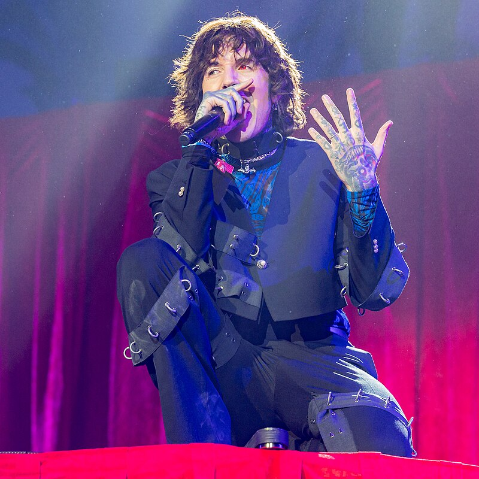
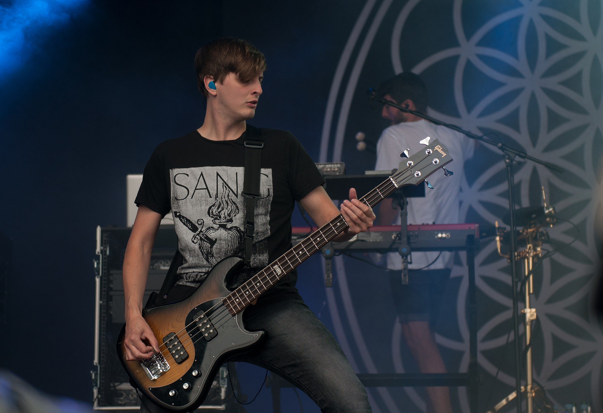
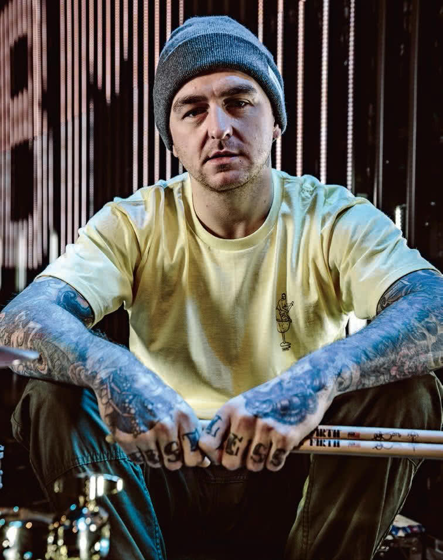
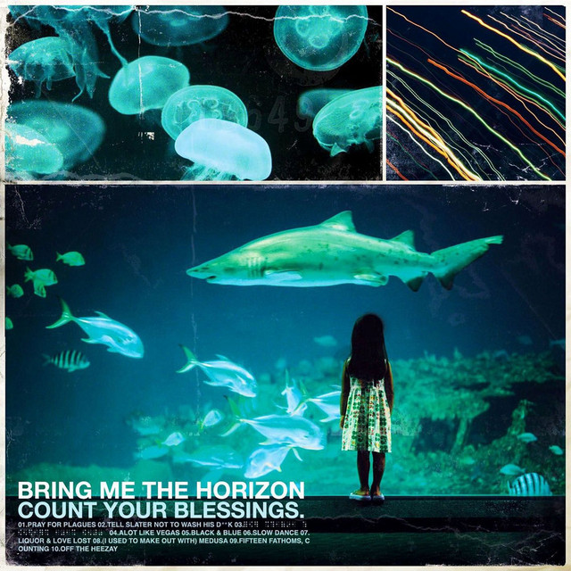
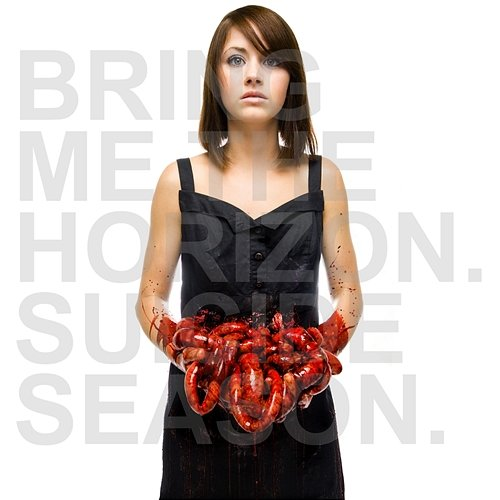
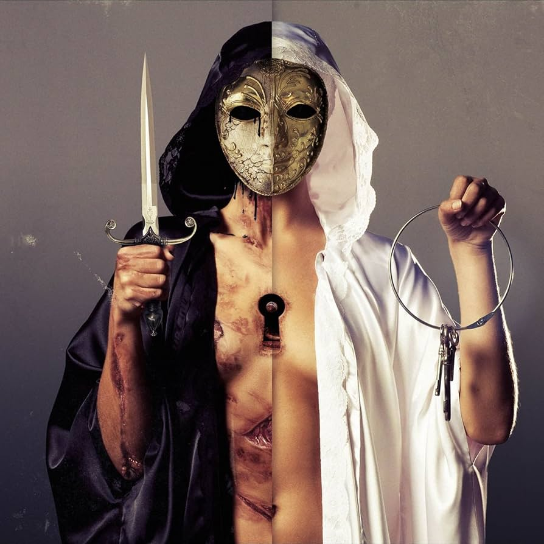
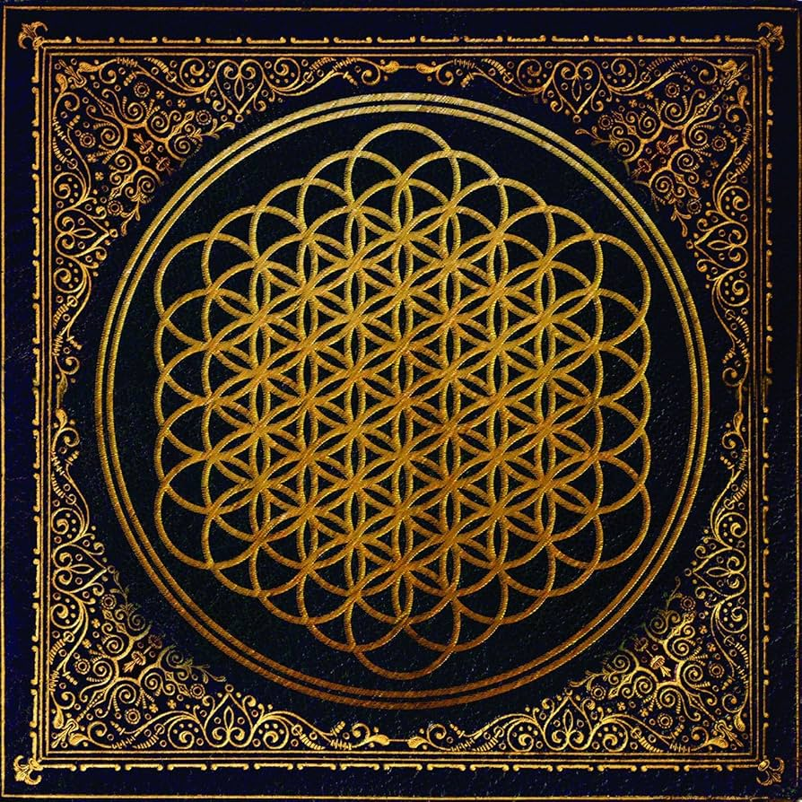
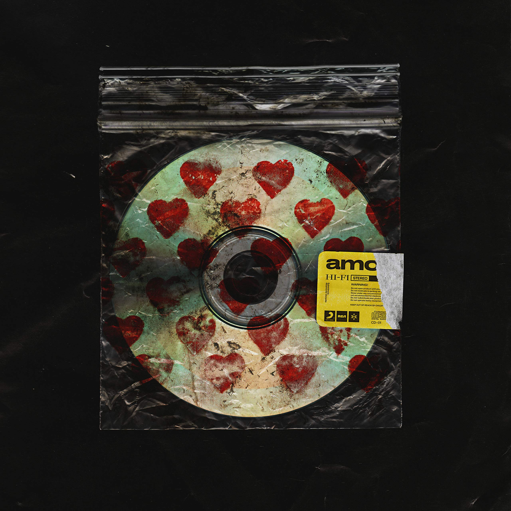
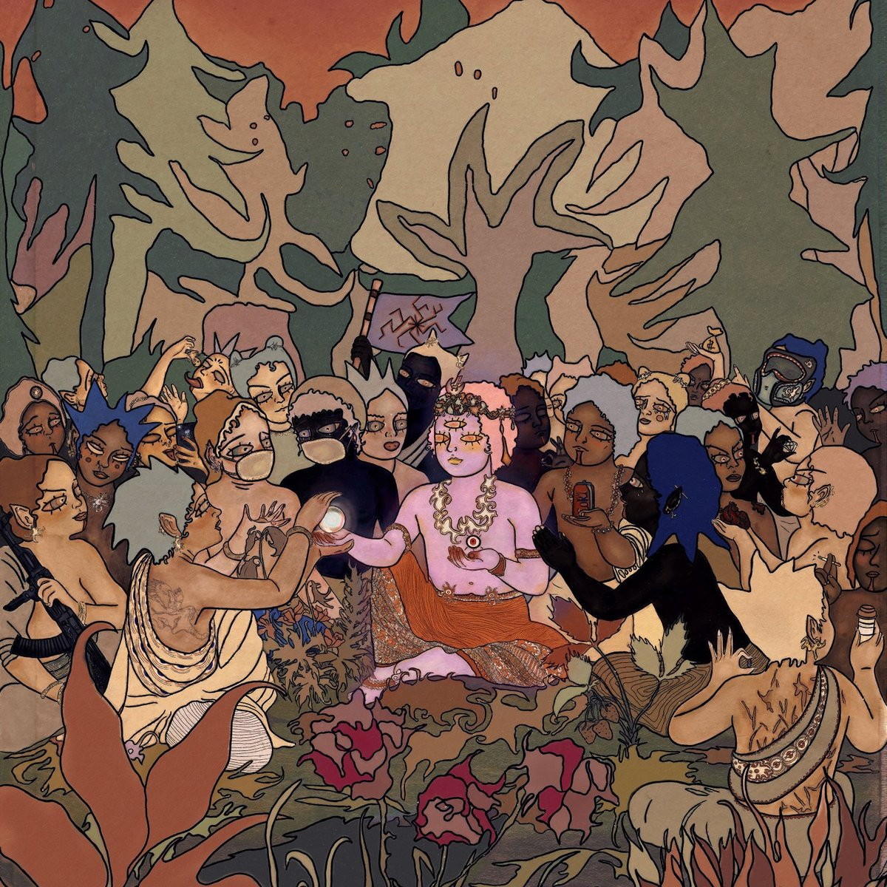

Członkowie Zespołu
| Muzyk | Instrument | Od kiedy w zespole | Zdjęcie |
|---|---|---|---|
| Oli Sykes | Wokal czysty, wokal ekstremalny | 2004 |  |
| Lee Malia | Gitara prowadząca | 2004 | |
| Matt Kean | Gitara rytmiczna | 2004 |  |
| Matt Nicholls | Perkusja | 2004 |  |
Byli członkowie
| Muzyk | Instrument | Okres w zespole | Zdjęcie |
|---|---|---|---|
| Jordan Fish | Keyboard, syntezator, programowanie, wokal wspierający | 2010-2023 | |
| Jona Weinhofen | gitara, wokal wspierający | 2009-2013 |  |
| Curtis Ward | gitara | 2004-2009 |  |
Dyskografia

Count Your Blessings
Rok wydania: 2006

Suicide Season
Rok wydania: 2008

There Is a Hell, Believe Me I’ve Seen It. There Is a Heaven, Let’s Keep It a Secret
Rok wydania: 2010

Sempiternal
Rok wydania: 2013
That`s a spirit
Rok wydania: 2015

amo
Rok wydania: 2019

Post Human: Survival Horror
Rok wydania: 2020

Post Human: NeX GEn
Rok wydania: 2024